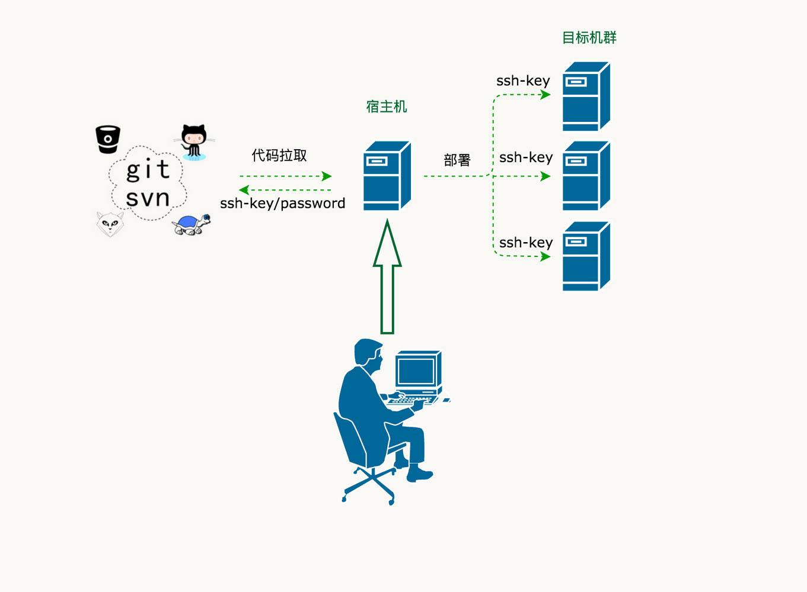
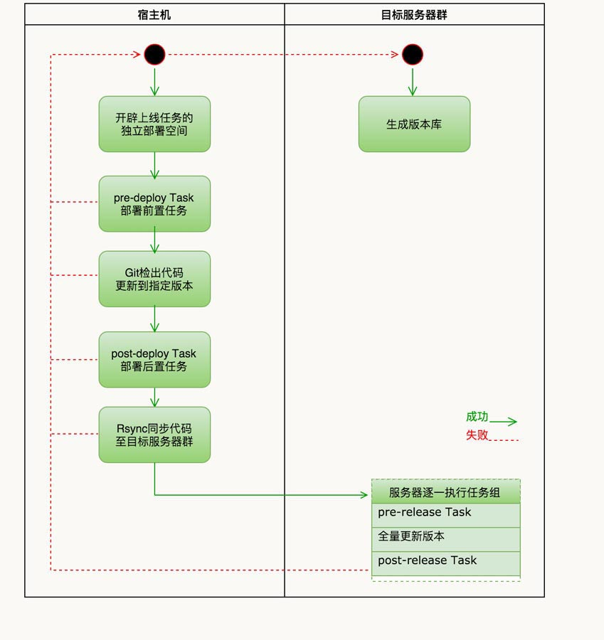

宿主机、目标机群、操作用户
宿主机、目标机群、操作用户关系如下图所示，宿主机（walle所在的机器），是一个中间机器，是代码托管与远程目标机群的纽带。所以宿主机需要与代码托管(github/gitlab)和远程目标机群都建立ssh-key信任。

权限模型
权限的角色分为SUPER 超管、OWNER 所有者、MASTER 负责人、DEVELOPER 开发者、REPORTER 访客，操作的资源包括空间、项目、上线单（任务）、环境、用户等

更详细的权限模型说明：权限模型
用户关系与信任关系

- A 能密码登录所有服务器（把A的key加入其它机器信任列表）
- A 能拉git代码（把A的key加入git信任列表）
- 免密码登录三个条件
- ~ 755
- ~/.ssh 700
- ~/.ssh/authorized_keys 644 或 600
- 时间宝贵。不要部署在mac os，请直接部署到Centos 6/7试用，减少不必要的麻烦
更详细的信任关系配置手册说明：权限模型
上线流程图
